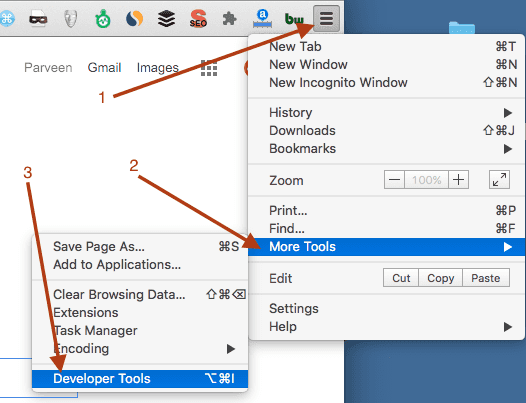
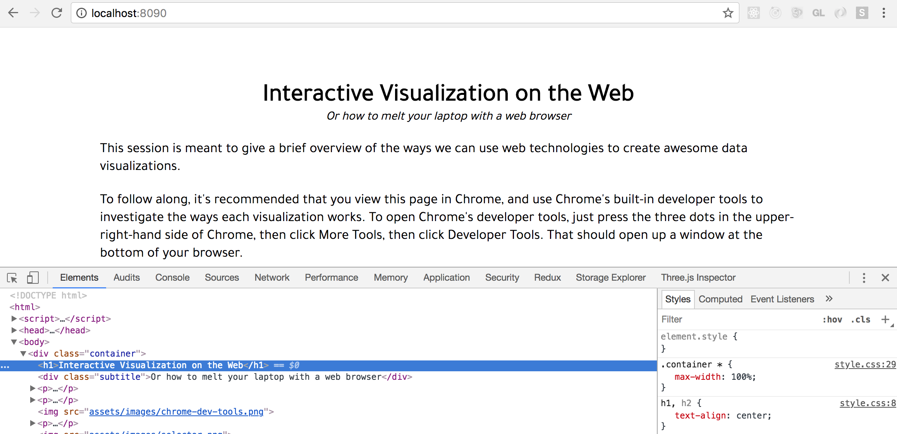
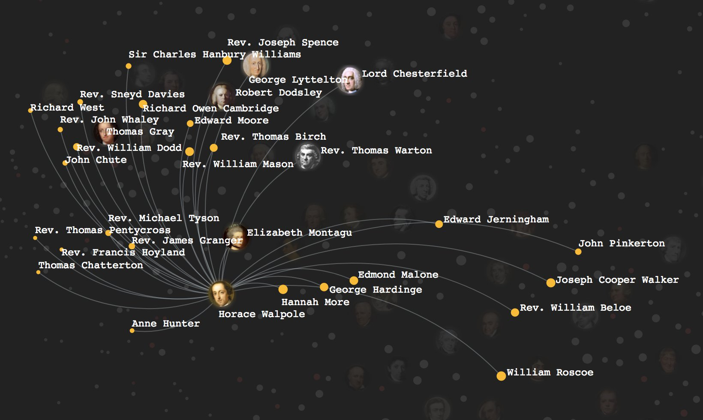

Interactive Visualizations on the Web
This session is meant to give a brief overview of the ways we can use web technologies to create awesome data visualizations.
To follow along, it's recommended that you view this page in Chrome, and use Chrome's built-in developer tools to investigate the ways each visualization works. To open Chrome's developer tools, just press the three dots in the upper-right-hand side of Chrome, then click More Tools, then click Developer Tools. That should open up a window at the bottom of your browser.
With the developer tools open, click the Selector widget, which is the icon at the top-left of the Chrome developer toolbar. The Selector icon looks like this:
With that tool selected, try hovering on various elements of the page. As you do so, you should see the hovered elements highlighted on the page. Click on one of these elements to investigate the HTML and CSS content used to render that element on the page:
In the example above, we can see that we've selected an <h1> tag, and we can see that the page's CSS gives h1 elements text-align: center. If you're comfortable tinkering with HTML and CSS in this way, you're ready to build some web graphics!
Data Visualization with HTML + CSS
When tasked with creating data visualizations, many developers rush into using JavaScript, but one can create awesome visualizations without a single line of JavaScript! The following example even affords user interactivity without a single line of JavaScript:
See the Pen CSS-Only Chart by Claudio Holanda (@kazzkiq) on CodePen.
The example above and many others below come from Codepen.io, a website that hosts lots of fantastic examples of webpages and web technologies. If you click the HTML, CSS, or JS buttons, you can see the relevant HTML, CSS, and JavaScript used to create the given example. If you'd prefer to see the entire example and all code used to generate it at once, click the 'Edit on Codepen' link instead.
Many pages use 'Pure CSS' components (or HTML elements that include no JavaScript) to create charming visual effects that look like data visualizations. The following is an example:
See the Pen Pure CSS graph anim by dale (@outofthisworld) on CodePen.
Finally, there are some CSS wizards who take delight in finding exceedingly clever ways to build stunning graphics without using JavaScript. Achieving a beautiful graphic without using JavaScript is a badge of honour that speaks highly of one's front-end developer skills. Here's an awesome example of such a visualization:
See the Pen Pure CSS 3D Island by Honman Yau (@honmanyau) on CodePen.
Data Visualization with SVG
While one can achieve awesome effects with just HTML and CSS, most professionals working on data visualization tasks will use Scalable Vector Graphics, or SVG, as their render target. SVG graphics use a hierarchical element tree that's similar to the Document Object Model generated by HTML pages. However, SVG elements use a vector technology that ensures they look good at any scale. The following example shows how to create a circle using SVG:
See the Pen Single Circle SVG by Douglas Duhaime (@duhaime) on CodePen.
By repeating the circle element multiple times, one can create multiple circles on the page:
See the Pen Multiple Circle SVG (no JS) by Douglas Duhaime (@duhaime) on CodePen.
While one can build SVG graphics by hand, one can also use JavaScript to build SVG's piece-by-piece. The following example uses the popular library to create a scatterplot of circles:
See the Pen Multiple Circle SVG (D3.js) by Douglas Duhaime (@duhaime) on CodePen.
Using the range of SVG primitives available, one can create fun, interactive visualizations for the web. The following example uses some of these primitives to show the relationships between historic poets:
To explore a wide range of other D3 examples, feel free to try the search interface below, which allows one to search many of the great examples at bl.ocks.org to find visualiations relevant for a given project:
Data Visualization with WebGL
SVG is a powerful technology, but it has its limitations. Because SVG represents each geometrical primitive as a separate HTML element, it's difficult to make SVG scale to datasets with tens of thousands of observations. To visualize these large datasets in a browser, one needs WebGL.
WebGL is a JavaScript API supported by browsers that's based on OpenGL ES 2.0. It's a tremendously powerful, low-level API, that essentially forces content creators to build up graphics from very small, low-level primitives like triangles and points.
For a taste of the raw WebGL API, check out the following example, which renders 100,000 points.
See the Pen WebGL Points by Douglas Duhaime (@duhaime) on CodePen.
The example above shows that the raw WebGL API requires lots of low-level work: One must create and bind a number of statically-typed buffers, define fragment and vertex "shaders" using the Open GL Shader Language (GLSL), and do some matrix algebra to describe how objects should move through time.
Luckily, a number of popular frameworks help abstract away this low-level work so one can focus instead on making interactive graphics with more user-friendly API's. The following is only one of many examples of great graphics built with the Three.js library, which allows users to build "low-poly" animals like the cat below with higher-order geometric primitives:
See the Pen Cat vs ball of wool by Karim Maaloul (@Yakudoo) on CodePen.
While WebGL is often used for game development and 3D immersive experiences, it's also tremendously useful for data visualization. The following example uses WebGL to transform the solar system into a fully-interactive environment:
For another example of stunning WebGL work, we could turn to the visualization of wind patterns built by Vladimir Agafonkin, creator of Leaflet.js:
Yale University's Digital Humanities Lab recently used WebGL to build PixPlot, a tool that analyzes large image collections and visualizes similarities between the images:

The leading WebGL library today is Three.js, which hosts a tremendously rich library of examples to inspire and help teach those who are new to the library. Click the links on the left-hand side below to explore different examples put together with Three.js
Next Steps
The examples above are meant to help show some of the possibilies in modern web development. The links below are meant to help introduce you to those technologies so you can build inspiring examples for other developers.
CSS
To go further with awesome CSS effects, check out the following links:
SVG
To learn how to use SVG charts in your own work, feel free to check out the following DHLab workshops:
WebGL
To get started with WebGL programming, check out the following beginner-friendly posts: